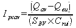
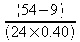
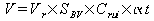
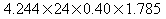

Manuel utilisateur : Les Bassins de stockage/restitution
Descriptif de l'exemple :
Dans le cadre de la réhabilitation d'un réseau unitaire d'une zone urbanisée de 24 ha (Zone A); il est imposé de limiter la fréquence des rejets vers le milieu naturel. Le déversoir d'orage (DO) est dimensionné pour une débit de référence correspondant à une pluie d'intensité de 15 l/ha/s.
L'usine de traitement à une capacité limitée à 65 l/s et reçoit égal les apports de la zone B pour une valeur de 11 l/s. Le débit de la zone A doit donc être limité à 54 l/s.
L'exemple de calcul de dimensionnement d'un bassin de stockage/restitution qui suit correspond à l'exemple « Démo BSR ». Pour l'ouvrir, il faut cliquer sur ouvrir dans le menu « Bassin de stockage »
ensuite sélectionner « Démo BSR » dans la fenêtre qui vient d'apparaître,
et bien sûr cliquer sur le bouton « OK » pour valider votre choix.
Pour saisir les données caractéristiques du bassin versant, on peut :
soit entrer directement les valeurs des caractéristiques géométriques et des débits résultants , c'est la solution de l'exemple Demo BSR
soit sélectionner un bassin versant urbain en cliquant sur le bouton du même nom.
Dans ce cas, on bascule vers le module « Bassin versant ». (cf. chapitre « 3.2 »« - »« Les Bassins Versants » ).
Pour retourner vers le module « Bassin de stockage », il faut cliquer sur le bouton « Retour au bassin de stockage » et valider le transfert de données :
| Important | |
|---|---|
Lorsqu'on veut importer des données du module Bassin versant, il faut que le bassin versant soit de type urbain. |
Le calcul est activé par le bouton Calculer.
La zone résultat présente les résultats intermédiaires de calcul ainsi que le volume théorique de stockage.
L'intensité de pluie aval est déterminée par la relation :
 =  = 4.688 l/ha/s
Le volume réduit 4.244 m3/ha est déduit du graphique
Le volume de stockage nécessaire est estimé à
 =  = 72.7 m3
On peut déterminer les dimensions théoriques de l'ouvrage permettant de stocker le volume calculé. Trois types sont proposés :
soit un bassin à base circulaire
soit un bassin à base rectangulaire
soit un bassin constitué de canalisation circulaire
Dans l'exemple, la troisième option est choisie avec un diamètre de de 2.00 m. Il est alors nécessaire de disposer d'un linéaire minimum de l'ordre de 23 m.
La zone graphique affiche un schéma de la solution retenue.